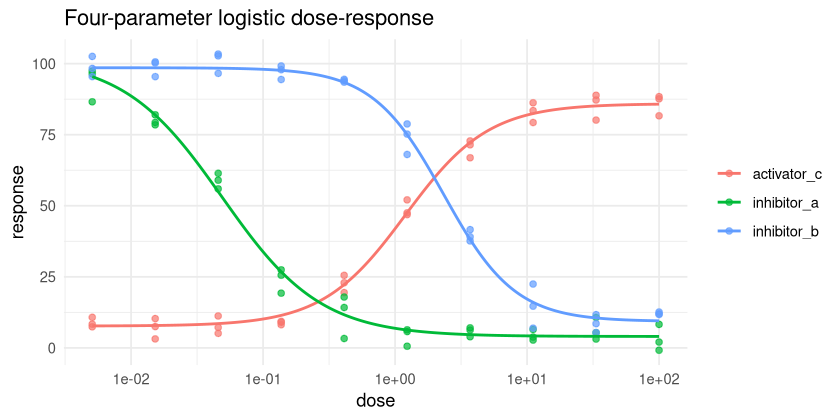

tidybiotek brings applied biotechnology bioinformatics into the tidyverse and tidymodels. Every function takes a data frame first, uses tidy evaluation for its column arguments and returns a tibble, so whole analyses read as pipelines. Everything is written in base R and stats: there are no Bioconductor or compiled dependencies, so it installs cleanly on any system.
| Module | Functions |
|---|---|
| Sequences |
bio_seq_tbl(), bio_translate(), bio_gc_content(), bio_codon_weights(), bio_cai(), bio_codon_optimise(), bio_primer_tm(), bio_kmer_count(), bio_aa_props()
|
| Assays |
bio_qpcr_ddct() (delta-delta Ct and Pfaffl), bio_dose_response() (4PL IC50 and EC50), bio_elisa_quant()
|
| Bioprocess |
bio_enzyme_kinetics() (Michaelis-Menten), bio_monod_growth() (batch bioreactor kinetics) |
| Omics |
bio_diff_expr() (moderated t-test), bio_enrich() (over-representation analysis) |
| recipes |
step_bio_kmers(), step_bio_aa_props(), step_bio_vst_norm()
|
| rsample |
bio_homology_cv(), bio_batch_cv()
|
| yardstick |
enrichment_factor(), bedroc(), assay_cv_error()
|
| parsnip |
bio_four_pl() with the "nls_4pl" engine |
| Reporting |
tidy(), glance(), augment() and autoplot() methods |
Installation
Install the development version from GitHub:
# install.packages("remotes")
remotes::install_github("jmozez/tidybiotek")tidyvisor is the companion statistical advisor for study design, power, assumptions and interpretation. It is optional: tidybiotek works on its own.
remotes::install_github("jmozez/tidyvisor")Sequences
Translate the E. coli K-12 coding sequences in ecoli_cds and compare codon adaptation between ribosomal protein genes and other genes:
library(tidybiotek)
library(dplyr)
ecoli_cds |>
bio_translate(sequence, code = "bacterial", to_stop = TRUE, start_as_met = TRUE) |>
bio_gc_content(sequence, by_position = TRUE) |>
bio_cai(sequence) |>
group_by(class) |>
summarise(
genes = n(),
translations_match = mean(translated == protein),
gc3 = mean(gc3),
cai = mean(cai)
)
#> # A tibble: 2 × 5
#> class genes translations_match gc3 cai
#> <chr> <int> <dbl> <dbl> <dbl>
#> 1 other 20 1 0.569 0.439
#> 2 ribosomal 56 1 0.490 0.695Melting temperatures of common sequencing primers by the nearest-neighbour method:
tibble::tibble(
name = c("M13F", "M13R", "T7"),
primer = c("GTAAAACGACGGCCAGT", "CAGGAAACAGCTATGAC", "TAATACGACTCACTATAGGG")
) |>
bio_primer_tm(primer)
#> # A tibble: 3 × 3
#> name primer tm
#> <chr> <chr> <dbl>
#> 1 M13F GTAAAACGACGGCCAGT 49.2
#> 2 M13R CAGGAAACAGCTATGAC 43.6
#> 3 T7 TAATACGACTCACTATAGGG 44.6Assays
Four-parameter logistic fits give IC50 and EC50 values with confidence intervals:
fit <- bio_dose_response(dose_response_sim, dose, response, .by = compound)
fit |> select(compound, ec50, ec50_low, ec50_high, hill, type)
#> # A bio_assay: dose_response: 3 x 6
#> compound ec50 ec50_low ec50_high hill type
#> <chr> <dbl> <dbl> <dbl> <dbl> <chr>
#> 1 activator_c 1.20 1.06 1.36 1.38 EC50
#> 2 inhibitor_a 0.0490 0.0413 0.0581 -1.16 IC50
#> 3 inhibitor_b 2.34 2.07 2.65 -1.61 IC50
autoplot(fit)
Relative expression from qPCR Ct values:
bio_qpcr_ddct(qpcr_sim, ct, gene, sample, treatment,
reference_genes = c("gapA", "rpoD"), control = "control"
) |>
tidy() |>
filter(treatment != "control") |>
select(gene, treatment, fold_change, conf.low, conf.high, p.value)
#> # A tibble: 8 × 6
#> gene treatment fold_change conf.low conf.high p.value
#> <chr> <chr> <dbl> <dbl> <dbl> <dbl>
#> 1 dnaK heat_42C 7.39 4.86 11.2 0.0000338
#> 2 dnaK heat_46C 24.2 16.2 36.1 0.00000193
#> 3 groL heat_42C 4.22 2.82 6.32 0.000148
#> 4 groL heat_46C 7.15 5.73 8.91 0.00000746
#> 5 ibpA heat_42C 14.1 9.41 21.2 0.0000524
#> 6 ibpA heat_46C 59.8 32.5 110. 0.00000489
#> 7 ompF heat_42C 0.590 0.342 1.02 0.0470
#> 8 ompF heat_46C 0.295 0.157 0.556 0.00526Bioprocess kinetics
bio_enzyme_kinetics(puromycin_kinetics, substrate, rate, .by = state)
#> # A bio_assay: enzyme_kinetics: 2 x 8
#> state vmax vmax_se km km_se sigma nobs method
#> <chr> <dbl> <dbl> <dbl> <dbl> <dbl> <int> <chr>
#> 1 treated 213. 6.95 0.0641 0.00828 10.9 12 nls
#> 2 untreated 160. 6.48 0.0477 0.00778 9.77 11 nls
bio_monod_growth(fermentation_sim, time_h, biomass_g_l,
substrate = glucose_g_l, .by = reactor
) |>
select(reactor, mu_max, ks, yield, doubling_time)
#> # A bio_assay: monod: 3 x 5
#> reactor mu_max ks yield doubling_time
#> <chr> <dbl> <dbl> <dbl> <dbl>
#> 1 R1 0.556 0.335 0.512 1.25
#> 2 R2 0.529 0.145 0.473 1.31
#> 3 R3 0.561 0.839 0.466 1.24Omics
de <- bio_diff_expr(expression_sim, gene, sample, count, condition,
treatment = "stress", reference = "control", transform = "log2_cpm"
)
glance(de)
#> # A tibble: 1 × 7
#> n_features n_significant df_prior s0_sq df_residual treatment reference
#> <int> <int> <dbl> <dbl> <int> <chr> <chr>
#> 1 1000 69 11.8 0.150 6 stress control
bio_enrich(de, feature, p_adj < 0.05 & log2fc > 0, gene_sets_sim) |>
select(gene_set, set_size, overlap, fold_enrichment, p_adj) |>
head(3)
#> # A tibble: 3 × 5
#> gene_set set_size overlap fold_enrichment p_adj
#> <chr> <int> <int> <dbl> <dbl>
#> 1 stress_response 40 26 15.1 1.29e-28
#> 2 background_set_18 52 6 2.68 3.05e- 1
#> 3 background_set_21 17 3 4.10 3.31e- 1tidymodels
Sequence features, homology-aware resampling and early-recognition metrics plug straight into tidymodels:
rec <- recipes::recipe(class ~ protein, data = ecoli_cds) |>
step_bio_aa_props(protein) |>
recipes::prep()
recipes::bake(rec, new_data = NULL) |> head(3)
#> # A tibble: 3 × 10
#> class protein_length protein_mol_weight protein_isoelectric_point
#> <fct> <dbl> <dbl> <dbl>
#> 1 ribosomal 234 24730. 10.3
#> 2 ribosomal 273 29860. 11.6
#> 3 ribosomal 209 22244. 10.7
#> # ℹ 6 more variables: protein_charge_ph7 <dbl>, protein_gravy <dbl>,
#> # protein_aromaticity <dbl>, protein_frac_acidic <dbl>,
#> # protein_frac_basic <dbl>, protein_frac_hydrophobic <dbl>
set.seed(1)
bio_homology_cv(ecoli_cds, protein, v = 5, k = 2, threshold = 0.2)
#> # 5-fold homology-aware cross-validation (k = 2, threshold = 0.2)
#> # A tibble: 5 × 2
#> splits id
#> <list> <chr>
#> 1 <split [60/16]> Fold1
#> 2 <split [61/15]> Fold2
#> 3 <split [61/15]> Fold3
#> 4 <split [61/15]> Fold4
#> 5 <split [61/15]> Fold5Data
ecoli_cds comes from NCBI RefSeq NC_000913.3, dnase_elisa and puromycin_kinetics are tidy copies of the classic R datasets DNase and Puromycin. qpcr_sim, dose_response_sim, fermentation_sim, expression_sim and gene_sets_sim are simulated with known true values so that methods can be checked; data-raw/make_data.R builds them all.